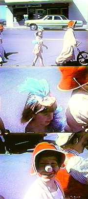

|
 |
The family physician, Dr.
Dowling, was brought in for help. He prescribed heavy doses of antidepressants and tranquilizers, insisting that it was a simple case of feminine nervousness. But the drugs only intensified Mary Frances' anxiety. Dr. Dowling responded by increasing the dosages, and introducing new psychotropics. With Mary Frances almost catatonic from Dr. Dowling's homespun psychopharmacology, and George working long days at the Department of Timber-Related Educational Resources... ...Travis withdrew into an elaborate world of daydreams. |